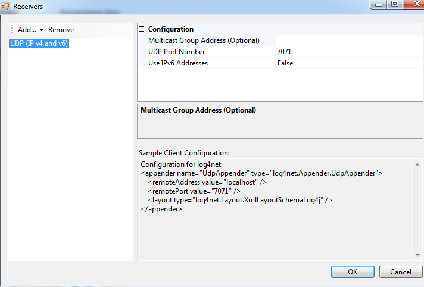
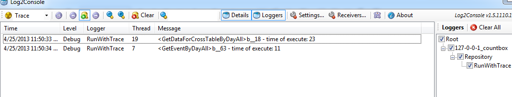

Log2Console with IISExpress and log4net - 25 April, 2013
Log2Console with IISExpress and log4net I have found that log4net and log2console don't work correctly (using IISExpress) with each other after trying using default configuration from http://log2console.codeplex.com/wikipage?title=ClientConfiguration.
But i have found new configuration for log4net and log2console (log4net) and

Seems work fine:
